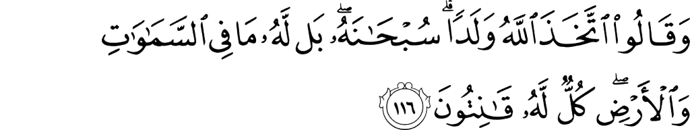

ইসলাম ছাড়া বাকি প্রায় সবগুলো ধর্ম কোনো না কোনো ভাবে চেষ্টা করে: পরম স্রষ্টার পাশাপাশি এক বা একাধিক ‘স্রষ্টার হেল্পার’ বা পাতি-ঈশ্বর-এর ধারণা নিয়ে আসতে, যারা মানুষের ‘অনেক কাছের’, যেখানে পরম স্রষ্টা হন অনেক দূরের। যারা মানুষের দুঃখ, কষ্ট বোঝে, যা পরম স্রষ্টা বোঝার ঊর্ধ্বে। যারা মানুষের নানা ভাবে উপকার করার চেষ্টা করে, যা পরম স্রষ্টা তাদের জন্য করার প্রয়োজন মনে করেন না। যাদের মানুষের মতই দোষ-ত্রুটি আছে, যেখানে পরম স্রষ্টা খুব বেশি পবিত্র, তিনি মানুষের দোষগুলো বোঝেন না।
এভাবে মানুষ এই ধরনের পাতি-ঈশ্বরদেরকে জন্ম দিয়ে পরম স্রষ্টাকে দূরে সরিয়ে দেয়। একইসাথে তারা নিজেদেরকে বোঝানোর চেষ্টা করে যে, যেহেতু তাদের সেই সব পাতি-ঈশ্বরদের রাগ, অভিমান, কামনা-বাসনা, ভুলে যাওয়া, আইন অমান্য করা ইত্যাদি নানা ধরনের ‘গুণ’ আছে, তাই মানুষের এসব ‘গুণ’ থাকাটা খুবই স্বাভাবিক। সুতরাং, মানুষের ধর্ম নিয়ে এত কড়াকড়ি করার দরকার নেই। এই সব পাতি-ঈশ্বররা মানুষের দোষত্রুটিকে ক্ষমা সুন্দর দৃষ্টিতে দেখবে। পরম স্রষ্টার কঠিন শাস্তি থেকে তাদেরকে বাঁচাবে।
আল্লাহ تعالى এই ধরনের ফাঁকিবাজি মানসিকতাকে কু’রআনে বহুবার গুড়িয়ে দিয়েছেন—

ওরা বলে, “আল্লাহ تعالى একজন সন্তান নিয়েছেন।” তিনি এসব থেকে পবিত্র! কখনই না! সবগুলো আকাশ এবং পৃথিবীতে যা কিছু আছে সব তাঁর। সবকিছুই তাঁর একান্ত অনুগত। [আল-বাক্বারাহ ১১৬]
{kind=link}
ইহুদিরা দাবি করতো: নবি উযাইর عليه السلام ছিলেন আল্লাহর تعالى সন্তান। খ্রিস্টানরা দাবি করতো: নবি ঈসা عليه السلام ছিলেন আল্লাহর تعالى সন্তান। আর আরব মুশরিকরা দাবি করতো: ফেরেশতারা হচ্ছেন আল্লাহর تعالى মেয়ে সন্তানরা।[১৪] মানুষের উর্বর মস্তিষ্ক থেকে বের হওয়া আজেবাজে ধারণার কোনো অভাব ছিল না। একইভাবে আমরা যদি অন্যান্য প্রাচীন ধর্মগুলো দেখি, তাহলে সেখানে আমরা আরও ভয়ঙ্কর সব দাবি দেখতে পারব, কিন্তু ধারণাগুলোর উৎস একই — নানা ধরনের পাতি-ঈশ্বরের ধারণা। এর উত্তরে আল্লাহ تعالى বলছেন—
سُبْحَانَهُ সুবহানাহু! তিনি এসব থেকে পবিত্র! بَل কখনই না!
সুবহানা অর্থ হচ্ছে: এসব থেকে মুক্ত, এসবের ঊর্ধ্বে।[১৪] আমরা আমাদের উর্বর মস্তিষ্ক থেকে যে সব আজেবাজে ধারণা বের করি আল্লাহর تعالى সম্পর্কে, তিনি এসব থেকে মুক্ত, এসবের ঊর্ধ্বে। আল্লাহর تعالى সঠিক সংজ্ঞা, তাঁর সম্পর্কে সঠিক ধারণা একমাত্র তিনিই দিতে পারেন। একারণেই যখনি আমরা আল্লাহর تعالى সম্পর্কে আজেবাজে কিছু শুনি, সাথে সাথে আমরা বলি — সুবহান আল্লাহ! আল্লাহ تعالى এসবের ঊর্ধ্বে! তিনি এসব থেকে পবিত্র!
আল্লাহর تعالى কাছাকাছি কাউকে নিয়ে যাওয়ার চেষ্টা শুধু অমুসলিমরাই করেনি, একই সাথে কিছু মুসলিমরাও করেছে। কিছু মুসলিম গোত্র তাদের নেতাকে আল্লাহ تعالى বানিয়ে ফেলেছে। কিছু পির আজকাল নিজেদেরকে আল্লাহ تعالى বলে দাবি করে। তাদের লক্ষ লক্ষ মুরিদ। এমনকি আজকাল আমরা অনেক বস্তুকেও আল্লাহর تعالى ক্ষমতা দিয়ে দেই। যেমন, কেউ যখন তাবিজ গ্রহণ করে বা কোনো পিরের মুরিদ হয়, তখন সে এভাবে চিন্তা করে—
- আমি যা চাই, তা আমি আল্লাহর تعالى কাছে নিজে নামাজ, রোজা, দু’আ করে চেয়ে পাচ্ছি না। (বা আমি এত কষ্ট করতে পারবো না, বা আমার পাওয়ার যোগ্যতা নেই।)
- যেহেতু আমি পাচ্ছি না, তাই আমি এমন একটা ব্যবস্থা নেব, যার কারণে আল্লাহ تعالى বাধ্য হবেন, বা আরও বেশি আগ্রহী হবেন আমাকে সেটা দিতে।
- আমি এই তাবিজটা ব্যবহার করলাম (বা এই পির ধরলাম)। এখন আল্লাহ تعالى আমার জন্য এমন কিছু করবেন, যা তিনি অন্য কোনোভাবে করবেন না।
এই ধরনের চিন্তা শিরক আল-আসগার, কারণ আমরা কোনো কিছুকে বা কাউকে ক্ষমতা দিয়ে দিচ্ছি আল্লাহর تعالى কাছ থেকে কিছু আদায় করে নিয়ে আসার জন্য। আমি যা চাই সেটা আল্লাহর تعالى দেওয়া শিক্ষা অনুসরণ করেও যেহেতু পাচ্ছি না, বা আল্লাহর تعالى দেওয়া শিক্ষা যেহেতু আমি অনুসরণ করবো না, তাই আমি এমন কিছু বা কাউকে ব্যবহার করবো, যার কারণে আল্লাহ تعالى আমাকে না দিয়ে পারবেন না। —সুবহান আল্লাহ! আল্লাহ تعالى এসবের ঊর্ধ্বে! এসব থেকে তিনি পবিত্র!
খ্রিস্টানরা যখন যীশুকে স্রস্টার সন্তান মনে করে, তারা ঠিক একই চিন্তা করে। তারা মনে করে যীশুর কারণে তারা সবাই স্বর্গে চলে যাবে। যীশু তাদের সব পাপ ক্ষমা করে দেবেন। তাই যীশুকে খুশি করতে পারলেই হলো। ঈশ্বর তাদেরকে না দেখলে কী হবে, যীশু আছেন না?
আমরা যখনি আল্লাহ تعالى ছাড়া অন্য কারো বা কিছুর কাছে চাইতে যাই, তখন আমাদের নিজেদেরকে এই প্রশ্নগুলো করা উচিত—
আল্লাহ تعالى কি আমার চাওয়া শুনছেন না?
অবশ্যই শুনছেন, কারণ তিনি السميع আস-সামি’ই: সর্ব শ্রোতা। সৃষ্টিজগতে এমন কোনো শব্দ বা চিন্তা নেই, যা তিনি শোনেন না।
আমার নিজেকে প্রশ্ন করতে হবে: তাহলে কেন আল্লাহ تعالى আমার চাওয়া শুনছেন না? আমি আল্লাহর تعالى আদেশ-নিষেধ শুনে জীবন পার করে তারপরে তাঁর কাছে চাচ্ছি কি? আমার ব্যাঙ্কের সব টাকা হালাল?
আল্লাহ تعالى কি আমার অবস্থা দেখতে পাচ্ছেন না?
অবশ্যই পাচ্ছেন, কারণ তিনি البصير আল-বাসির: সবকিছু খুব ভালভাবে দেখেন। কে কবে কী করেছে, কীভাবে কোনো ঘটনা ঘটলো, ঘটনার সূত্রপাত কোথায় —এই সবকিছু তিনি দেখেন।
আমার নিজেকে প্রশ্ন করতে হবে: আমার নিজের দোষগুলো কোথায় ভালো করে চিন্তা করে দেখেছি? আমার অবস্থার পেছনে আমার যোগ্যতার অভাব দায়ী কিনা তা দেখেছি?
আল্লাহ تعالى কি আমার কষ্ট অনুভব করেন না?
অবশ্যই করেন, তিনি الرؤوف আর-রাউ’ফ: তার সমবেদনার কোনো তুলনা হয় না। তাঁর থেকে ভালভাবে মানুষের কষ্ট আর কেউ বোঝে না।
আমার নিজেকে প্রশ্ন করতে হবে: আমার কষ্টের কারণ আমি নিজে নই তো? আমি কী কু’রআন, হাদিস অনুসরণ করে আমার জীবন যাপন করি?
আল্লাহ تعالى কি আমাকে দিতে পারেন না?
অবশ্যই, তিনি الوهاب আল-ওয়াহহাব: বার বার দেন, না চাইতেই দেন। আমি একদিন সকাল থেকে রাত পর্যন্ত আমার জীবনে যত কিছু আছে, যেটা আমার পাশের রাস্তায় ঘুমাতে যাওয়া গরিব মানুষদের নেই, তা গুণে দেখি? ১) কম্পিউটার, ২) ইন্টারনেট, ৩) মোবাইল ফোন, ৪) মাথার উপরে সিমেন্টের ছাদ, ৫) শোয়ার বিছানা, ৬) গায়ে দেওয়ার কম্বল, ৭) কলে পরিষ্কার পানি, ৮) চুলায় গ্যাস, ৯) আলমারি ভর্তি কাপড়, ১১) ক্যাবল টিভি, ১২) ফ্রিজে খাবার…
আল্লাহ القادر আল-ক্বাদির: যে কোনো কিছু ঘটাতে সক্ষম। সব ক্ষমতা তাঁর। অন্য কিছুর কোনো ক্ষমতা নেই, যদি না আল্লাহ তাকে ক্ষমতা না দেন।
তিনি الصمد আস-সামাদ: তাঁর উপর সবকিছু নির্ভর করে, তিনি কোনো কিছুর উপর নির্ভর করেন না।
তিনি الواجد আল-ওয়াজিদ: চরম ধনী। সমস্ত সম্পত্তি তাঁর। তাঁর কোনো কিছুর অভাব নেই।
আল্লাহ تعالى কি আমার বাবা-মা, সন্তান, দেবর-ননদ, অফিসের বস, সমাজের, দেশের অবস্থার পরিবর্তন করতে পারেন না?
অবশ্যই, তিনি মালিকুল মুল্ক: সব রাজার রাজা, সব নেতার উপরে, সব মন্ত্রীর উপরে।
আমি কি আমার অবস্থার পরিবর্তন করার জন্য সব চেষ্টার পর তাঁর কাছে চেয়েছি? আমার চাওয়াগুলো কি ১০০% হালাল?
তিনি العزيز আল-আজিজ: সব ক্ষমতা এবং কর্তৃত্ব তাঁর। আমি কি শুধুই তাঁর কাছে চাইছি, কোনো ধরনের শিরক ছাড়া?
তিনি الجبار আল-জাব্বার: তিনি যে কোনো কিছুকে, যে কোনো শক্তিকে বাধ্য করতে পারেন। আমি যা চাই, তাতে অন্য কারো ক্ষতি হবে না তো?
তিনি الولي আল-ওয়ালিয়ই: সর্বোচ্চ প্রশাসক। মহাবিশ্বের সবকিছু তিনি নিয়ন্ত্রণ করেন।
তিনি المؤخر আল-মুআক্ষির: তিনি কোনো ঘটনাকে দেরি করান, কোনো কিছুকে ধীর করে দেন, যখন তিনি তার প্রয়োজন মনে করেন।
আমার অবস্থার পরিবর্তন হতে দেরি হওয়ার মানে, নিশ্চয়ই আল্লাহর تعالى কোনো উদ্দেশ্য রয়েছে। একারণেই তিনি দেরি করছেন। আমার হয়তো এখনো কিছু একটা উপলব্ধি করা বাকি আছে, যার জন্য আমার অবস্থার পরিবর্তন হচ্ছে না। কী সেটা?
আল্লাহ تعالى কি আমার ভালো চান না?
অবশ্যই চান। তিনি البر আল-বারর: সকল ভালোর উৎস। ভালো যা কিছুই ঘটে, তার উৎস তিনি, তিনিই তা ঘটান।
আমি যা চাই, সেটা আমার এবং আমার পরিবারের জন্য, সমাজের, দেশের জন্য সত্যিই ভালো? আমি যা চাই, সেটার মধ্যে কোনো খারাপ কিছু লুকিয়ে নেই তো?
তিনি الرحيم আর-রাহিম: নিরন্তর করুণাময়। তিনি অল্প করুণাময় বা মাঝে মাঝে করুণাময় নন, এমন না। তাঁর করুণার দরজা সবসময় খোলা।
আমি কি তাঁর করুণা পাওয়ার যোগ্য? আমি কি জীবনে এত ভালো কাজ করেছি যে, আমি সবসময় তাঁর করুণা পাওয়ার যোগ্য? তিনি কি এর মধ্যেই আমাকে যথেষ্ট করুণা করেননি? তিন বেলা খাবার, পড়ার কাপড়, মাথার উপরে ছাদ, পরিবার, টিভি, কম্পিউটার, মোবাইল ফোন, ইলেক্ট্রিসিটি, পানি, গ্যাস, … — আমার কী আরও চাই? কবে আমার চাওয়া শেষ হবে?
তিনি المقدم আল-মুক্বাদ্দিম: তিনিই কোনো কিছুকে তাড়াতাড়ি ঘটান, যখন তিনি তার প্রয়োজন মনে করেন। আমার ব্যাপারটা কি সত্যিই এত গুরুত্বপূর্ণ?
আল্লাহ تعالى কি আমার সাথে করা অন্যায়ের প্রতিশোধ নেবেন না?
অবশ্যই নেবেন। তিনি المنتقم আল-মুনতাক্বিম: প্রতিশোধ গ্রহণকারী। তিনি যদি অন্যায়ের প্রতিশোধ নেওয়ার প্রয়োজন মনে করেন, তাহলে তাঁর চেয়ে ভয়ঙ্কর প্রতিশোধ আর কেউ নিতে পারবে না।
তবে আমি যে প্রতিশোধের কথা ভাবছি, সেটা কি ন্যায় বিচার হবে?
তিনি المقسط আল-মুক্বসিত্ব: পরম ন্যায় বিচারক। তিনি কোনো অন্যায়ের বিচার না করে ছেড়ে দেবেন না। তিনি কারো উপরে বিন্দুমাত্র অন্যায় করবেন না।
আল্লাহ تعالى কি আমাকে পছন্দ করেন না?
কেন নয়? তিনি الصبور আস-সাবুর — পরম ধৈর্যশীল। তার ধৈর্যের কাছে কারো তুলনা হয় না। পৃথিবীতে কেউ আমাকে সহ্য করতে না পারলেও, আল্লাহ تعالى করবেন।
তিনি العفو আল-আফু’উ — কোনো ক্ষোভ ধরে না রেখে ক্ষমাকারী। তিনি যখন ক্ষমা করেন, তিনি কোনো ‘কিন্তু’ ধরে রাখেন না।
তিনি التواب আত-তাওয়াব: বার বার তাওবাহ গ্রহণ করেন। আমি আগের জীবনে যত খারাপ কাজ, জঘন্য অন্যায় করে থাকি না কেন, এবার: ১) অন্তর থেকে ক্ষমা চেয়ে, ২) নিজেকে সংশোধন করে, ৩) নিষ্ঠার সাথে অন্যায়ের প্রায়শ্চিত্ত করতে থাকি। আল্লাহ تعالى এই ধরনের সঠিক পদ্ধতিতে করা তাওবাহ গ্রহণ করে, যে কোনো পাপ ক্ষমা করে দেবেন বলে কু’রআনে বহুবার কথা দিয়েছেন।
যদি তাবিজের বা পির সাহেবের কোনো ক্ষমতা থাকে?
এরপরও অনেকে ভাবতেন পারেন, “বলা তো যায় না, যদি তাবিজের কোনো ক্ষমতা থাকে? আমার পাড়ার ইমাম, মাওলানা সাহেব তো নিশ্চয়ই ভুল জানে না। তাছাড়া কত মানুষের মুখে শুনি তাবিজ পড়ার পর অসুখ ভালো হয়ে যায়, বিপদ কেটে যায়। পিরের পানি পড়া নিয়ে পরীক্ষায় ভালো ফল করে, চাকরি পেয়ে যায়; গিরায় ব্যাথা, গলার কাটা, কোমরে চুলকানি ভালো হয়ে যায়। এসবের ক্ষমতা থাকতেও তো পারে?”
১৯৭৯ সালে ডাক্তাররা একবার ১০৭ জন মানুষের উপর গবেষণা করে দেখেন যে, তাদের দাঁত তোলার আগে তাদেরকে যদি ব্যাথা কমানোর ওষুধ (এনালজেসিক) দেওয়া হচ্ছে বলে, শুধুই চিনির টেবলেট বা লবণ পানির ইনজেকশন দেওয়া হয়, তাহলে প্রায় ৩৫% মানুষের দাঁতের ব্যাথা কমে যায়, এবং দাঁত তোলার সময় তারা ব্যাথা কম পায়, ঠিক যেরকম ঘটে যাদেরকে সত্যিকারের ব্যাথার ওষুধ দেওয়া হয়।[২৫০]
১৯৮১ সালে ৭৪ জন রোগীর উপর গবেষণায় দেখা গেছে: ৪ মিগ্রা এবং ৬ মিগ্রা মরফিন দেওয়ায় যথাক্রমে ৩৬% এবং ৫০% রোগীর ব্যাথা কমে যায়। কিন্তু অবাক করার ব্যাপার হলো মরফিন দেওয়া হচ্ছে বলে যাদেরকে শুধুই লবণ পানি দেওয়া হয়েছে, তাদের মধ্যেও ৩৯% এর ব্যাথা কমে যায় ঠিক একই হারে, যে হারে মরফিন দিলে কমে। মরফিনের মত একটা শক্তিশালী ব্যাথা নাশক ওষুধের কাজ শুধু লবণ পানি দিয়ে করে ফেলা যায়।[২৫১]
২০১৩ গবেষণায় বের হয়েছে যে, মানুষের মস্তিষ্ক নিজে থেকেই মরফিনের থেকেও শক্তিশালী ব্যাথানাশক তৈরি করতে পারে, যদি মানুষকে ওষুধ দেওয়া হয়েছে বলে বোঝানো হয়, বিশেষ ভাবে সাইকোলজিক্যাল সাজেশন দেওয়া হয়, চমৎকার পরিবেশ তৈরি করা হয়, মেডিটেশন করানো হয়।[২৫৭]
২০০৮ সালে গবেষণায় দেখা গেছে, ডিপ্রেশনের ওষুধ দেওয়া হচ্ছে বলে শুধু চিনির ওষুধ খাইয়ে ৭৯% ডিপ্রেশনে ভোগা রোগীর ডিপ্রেশন ১২ সপ্তাহ পর্যন্ত ভালো রাখা গেছে।[২৫২] ২০০০ সালের আরেকটি গবেষণায় দেখা গেছে ডিপ্রেশনে ভোগা রোগীদের ৩০% আত্মহত্যা কমানো গেছে ওষুধের নাম করে শুধুই চিনির ট্যাবলেট খাইয়ে। চিকিৎসা দেওয়া হচ্ছে এই ধারণাটা যখন মানুষের মধ্যে দেওয়া হয়, তখন সে নিজে থেকেই ভালো হয়ে যেতে শুরু করে।
২০০২ সালে ওয়াশিংটন পোস্ট প্রকাশ করে যে, প্রোজ্যাক, যা বিশ্বের সবচেয়ে জনপ্রিয় এবং সবচেয়ে বেশি বিক্রি হওয়া ডিপ্রেশনের ওষুধ, যা প্রতিবছর বিলিয়ন ডলার আয় করে, পাঁচ বার ক্লিনিকাল ট্রায়ালের মধ্যে তিন বার চিনির ট্যাবলেটের কাছে হেরে গেছে। যার অর্থ: যখন একই সংখ্যক রোগীকে প্রোজ্যাক এবং প্রোজ্যাকের নাম করে না জানিয়ে চিনির ট্যাবলেট দেওয়া হয়, চিনির ট্যাবলেটে রোগীর অসুখ ভালো হয়ে যাওয়ার হার বেশি[২৫৩] এরপরেও প্রোজ্যাকের বিক্রি বৈধ করা হয়েছে এবং কোটি কোটি মানুষ ডাল-ভাতের মত নিয়মিত প্রোজ্যাক বা একই ধরনের এন্টিডিপ্রেসেন্ট ওষুধ খেয়ে যাচ্ছে।
২০০২ সালে হাঁটুর আর্থারাইটিস-এ ভোগা ১৮০ জন রোগীর উপর গবেষণা করে দেখা গেছে, যাদেরকে ঠিকমত হাঁটুর সার্জারি করে সঠিক চিকিৎসা দেওয়া হয়েছে এবং যাদেরকে চিকিৎসার নামে শুধুই একটু কাটাকাটি করে, অপারেশন করে দেওয়া হয়েছে বলে জানানো হয়েছে, তাদের মধ্যে সুস্থ হয়ে যাওয়ার হার সমান[২৫৪]
মিঃ রাইট একজন ক্যান্সার রুগী, যিনি আর কয়েকদিন বাঁচবেন বলে ডাক্তাররা ঘোষণা দিয়েছে। একদিন তিনি শুনলেন যে, Krebiozen নামে এক ওষুধ বিজ্ঞানীরা আবিষ্কার করেছেন, যা ক্যান্সারের নিরাময়। তিনি অনেক অনুরোধ করলেন ডাক্তারদেরকে সেটা তাকে দেওয়ার জন্য। তার ডাক্তার ডঃ ফিলিপ যেদিন তাকে সেই ইনজেকশন দিলেন, তার কয়েকদিন পর মিঃ রাইট সুস্থ হয়ে হেঁটে বেড়াতে লাগলেন। তার টিউমারগুলো যেন রাতারাতি গলে গেল!
দুই মাস পর মিঃ রাইট জানতে পারলেন Krebiozen আসলে ভুয়া। তার কয়েকদিন পর তার টিউমার আবার ফিরে এলো এবং তিনি ভীষণ অসুস্থ হয়ে গেলেন। তার ডাক্তার তাকে বললেন, “ওই সব কথায় কান দেবেন না।” তারপর তিনি তাকে বললেন যে, তিনি এক বিশেষ ভাবে তৈরি দ্বিগুণ কার্যকর ইনজেকশন দিচ্ছেন, যা Krebiozen এরই অত্যন্ত শক্তিশালী রূপ। মিঃ রাইট অত্যন্ত আগ্রহের সাথে তা গ্রহণ করলেন। তার টিউমার আবার রাতারাতি উবে গেল।
তিনি দুই মাস সম্পূর্ণ সুস্থ ছিলেন। কিন্তু তারপর একদিন তিনি খবরের কাগজে পড়লেন যে, যথেষ্ট গবেষণা করে নিশ্চিত হওয়া গেছে Krebiozen ক্যান্সারে কোনো কাজে লাগে না। তার দুই দিন পর তিনি মারা গেলেন[২৫৫]
এভাবে আসল ওষুধের বদলে সাধারণ চিনির ট্যাবলেট, সাধারণ লবণ পানির ইনজেকশন, সাজানো সার্জারি ব্যবহার করে রোগীকে চিকিৎসা দেওয়া হয়েছে —এমন নাটক করে অসুখ ভালো হয়ে যাওয়াকে ‘প্লাসিবো এফেক্ট’ বলে। প্লাসিবো এফেক্টের সুফলে ADHD, পরিপাকতন্ত্রের নানা ধরনের অসুখ, হাইপারটেনশন, মাসিকের সমস্যা, ডিপ্রেশন, সোরিয়াটিক আর্থারাইটিস, মাইগ্রেন, রিফ্লাক্স, ডিসপেপসিয়া, পা কামড়ানো, অস্থিরতা সমস্যা, এজমা, গ্যাস্ট্রিক সমস্যা, মাথা ব্যাথা, আতঙ্ক, বাইপোলার মেনিয়া, দীর্ঘদিনের কাশি, হার্পিস ইত্যাদি নানা ধরনের অসুখ উল্লেখযোগ্য হারে সারিয়ে ফেলা গেছে।[২৫৬] এই ঘটনা কীভাবে ঘটে, সেটা বিজ্ঞানীদের কাছে আজো এক বিরাট বিস্ময়।
আশাকরি এখন বুঝতে পারছেন: কেন ঝাড়ফুঁক, পানি পড়া, তাবিজ ইত্যাদি মাঝে মধ্যে কাজ করে?
এরপরেও যদি কারো মানতে অসুবিধা হয়, তাহলে আল্লাহ تعالى নিজে বলেছেন—
কখনই না! সবগুলো আকাশ এবং পৃথিবীতে যা কিছু আছে সব তাঁর। সবকিছুই তাঁর একান্ত অনুগত।
এই আয়াতে আল্লাহ تعالى বলেছেন: কুল্লুন كُلٌّ — যা কিছু থাকা সম্ভব তার সব কিছু, ক্বানিতুন قَانِتُون — একান্ত অনুগত। ক্বানিতুন এসেছে ক্বুনুত থেকে, যার অর্থ অনুগত। ক্বুনুত এবং ক্বানিত-এর মধ্যে পার্থক্য হলো, ধরুন আপনার দুজন দাস আছে। তাদেরকে বললেন আপনার জন্য পানি নিয়ে আসতে। একজন হাঁই তুলতে তুলতে উঠে, ধীরে সুস্থে গা চুলকাতে চুলকাতে গিয়ে পানি নিয়ে আসলো, আর আরেকজন সাথে সাথে লাফ দিয়ে উঠে, “জ্বি হুজুর! এখুনি দিচ্ছি হুজুর!” বলে দৌড়িয়ে গিয়ে পানি নিয়ে এসে বলল, “আর কিছু করতে পারি আপনার জন্য হুজুর?” —এই হচ্ছে ক্বানিত। মহাবিশ্বের সবকিছু আল্লাহর تعالى প্রতি ক্বানিত। সবকিছু শুধু তাঁর কথা শুনছেই না, তারা নিষ্ঠার সাথে তাঁর নির্দেশ মানার জন্য সবসময় প্রস্তুতও।
এখন সুধীবৃন্দরা প্রশ্ন করেন, “কই আমি তো ক্বানিত নই? আমি তো আল্লাহর تعالى সব আদেশ মানি না?”
আল্লাহ تعالى যেন তাদেরকে উদ্দেশ্য করেই এই আয়াতে বলছেন, সবকিছু তাঁর প্রতি একান্ত অনুগত। তোমাদের থেকে আরও ভয়ঙ্কর শক্তিশালী সত্তা আছে, যারা আল্লাহর تعالى প্রতি একান্ত অনুগত। তোমাদের সমস্যাটা কোথায়? তোমরা কার সাথে অবাধ্যতা করছ একবার ভেবে দেখেছ?
সূত্র:
- [১] নওমান আলি খানের সূরা আল-বাকারাহ এর উপর লেকচার এবং বাইয়িনাহ এর কু’রআনের তাফসীর।
- [২] ম্যাসেজ অফ দা কু’রআন — মুহাম্মাদ আসাদ।
- [৩] তাফহিমুল কু’রআন — মাওলানা মাওদুদি।
- [৪] মা’রিফুল কু’রআন — মুফতি শাফি উসমানী।
- [৫] মুহাম্মাদ মোহার আলি — A Word for Word Meaning of The Quran
- [৬] সৈয়দ কুতব — In the Shade of the Quran
- [৭] তাদাব্বুরে কু’রআন – আমিন আহসান ইসলাহি।
- [৮] তাফসিরে তাওযীহুল কু’রআন — মুফতি তাক্বি উসমানী।
- [৯] বায়ান আল কু’রআন — ড: ইসরার আহমেদ।
- [১০] তাফসীর উল কু’রআন — মাওলানা আব্দুল মাজিদ দারিয়াবাদি
- [১১] কু’রআন তাফসীর — আব্দুর রাহিম আস-সারানবি
- [১২] আত-তাবারি-এর তাফসীরের অনুবাদ।
- [১৩] তাফসির ইবন আব্বাস।
- [১৪] তাফসির আল কুরতুবি।
- [১৫] তাফসির আল জালালাইন।
- [২৫০] Levine, J.D. et al., 1979. Role of pain in placebo analgesia. Proceedings of the National Academy of Sciences of the United States of America, 76(7), pp.3528–3531. Available at: http://www.ncbi.nlm.nih.gov/pmc/articles/PMC383861/ [Accessed November 10, 2014].
- [২৫১] Levine JD, Gordon NC, Smith R, Fields HL (1981). “Analgesic responses to morphine and placebo in individuals with postoperative pain”. Pain 10 (3): 379–89. doi:10.1016/0304-3959(81)90099-3. PMID 7279424.
- [২৫২] Khan A, Redding N, Brown WA (2008). “The persistence of the placebo response in antidepressant clinical trials”. Journal of Psychiatric Research 42 (10): 791–796. doi:10.1016/j.jpsychires.2007.10.004. PMID 18036616
- [২৫৩] Khan A, Warner HA, Brown WA (April 2000). “Symptom reduction and suicide risk in patients treated with placebo in antidepressant clinical trials: an analysis of the Food and Drug Administration database”. Arch. Gen. Psychiatry 57 (4): 311–7. doi:10.1001/archpsyc.57.4.311. PMID 10768687.
- [২৫৪] Moseley JB, O’Malley K, Petersen NJ, Menke TJ, Brody BA, Kuykendall DH, Hollingsworth JC, Ashton CM, Wray NP (July 2002). “A controlled trial of arthroscopic surgery for osteoarthritis of the knee”. The New England Journal of Medicine 347 (2): 81–8. doi:10.1056/NEJMoa013259. PMID 12110735
- [২৫৫] Blakeslee, S., 1998. Placebos Prove So Powerful Even Experts Are Surprised; New Studies Explore the Brain’s Triumph Over Reality. Science. Available at: http://www.nytimes.com/1998/10/13/science/placebos-prove-so-powerful-even-experts-are-surprised-new-studies-explore-brain.html [Accessed November 10, 2014].
- [২৫৬] Anon, 2014. Placebo. Wikipedia. Available at: http://en.wikipedia.org/wiki/Placebo [Accessed November 10, 2014].